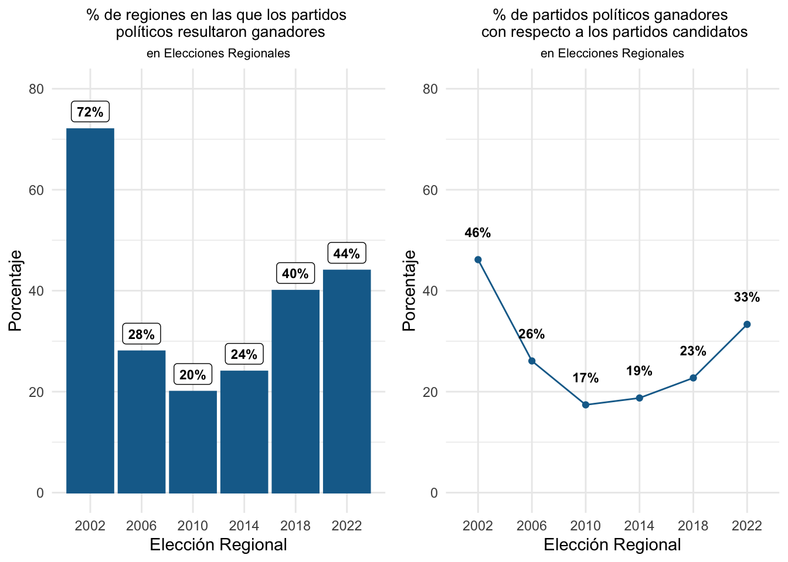

5 Mito 4:
Organizaciones políticas ganadoras.
5.0.0.1 Organizaciones ganadoras según tipo de organización por elección
| Region | 2002 | 2006 | 2010 | 2014 | 2018 | 2022 |
|---|---|---|---|---|---|---|
| AMAZONAS | PARTIDO POLÍTICO | PARTIDO POLÍTICO | ALIANZA ELECTORAL | MOVIMIENTO REGIONAL | MOVIMIENTO REGIONAL | MOVIMIENTO REGIONAL |
| ANCASH | PARTIDO POLÍTICO | MOVIMIENTO REGIONAL | MOVIMIENTO REGIONAL | MOVIMIENTO REGIONAL | PARTIDO POLÍTICO | MOVIMIENTO REGIONAL |
| APURIMAC | PARTIDO POLÍTICO | MOVIMIENTO REGIONAL | MOVIMIENTO REGIONAL | MOVIMIENTO REGIONAL | MOVIMIENTO REGIONAL | PARTIDO POLÍTICO |
| AREQUIPA | PARTIDO POLÍTICO | MOVIMIENTO REGIONAL | ALIANZA ELECTORAL | MOVIMIENTO REGIONAL | MOVIMIENTO REGIONAL | MOVIMIENTO REGIONAL |
| AYACUCHO | PARTIDO POLÍTICO | MOVIMIENTO REGIONAL | PARTIDO POLÍTICO | MOVIMIENTO REGIONAL | MOVIMIENTO REGIONAL | MOVIMIENTO REGIONAL |
| CAJAMARCA | PARTIDO POLÍTICO | MOVIMIENTO REGIONAL | ALIANZA ELECTORAL | MOVIMIENTO REGIONAL | PARTIDO POLÍTICO | PARTIDO POLÍTICO |
| CALLAO | PARTIDO POLÍTICO | MOVIMIENTO REGIONAL | MOVIMIENTO REGIONAL | ALIANZA ELECTORAL | MOVIMIENTO REGIONAL | MOVIMIENTO REGIONAL |
| CUSCO | PARTIDO POLÍTICO | PARTIDO POLÍTICO | ALIANZA ELECTORAL | MOVIMIENTO REGIONAL | PARTIDO POLÍTICO | PARTIDO POLÍTICO |
| HUANCAVELICA | MOVIMIENTO REGIONAL | MOVIMIENTO REGIONAL | MOVIMIENTO REGIONAL | MOVIMIENTO REGIONAL | MOVIMIENTO REGIONAL | MOVIMIENTO REGIONAL |
| HUANUCO | MOVIMIENTO REGIONAL | ALIANZA ELECTORAL | PARTIDO POLÍTICO | MOVIMIENTO REGIONAL | PARTIDO POLÍTICO | MOVIMIENTO REGIONAL |
| ICA | PARTIDO POLÍTICO | MOVIMIENTO REGIONAL | MOVIMIENTO REGIONAL | PARTIDO POLÍTICO | MOVIMIENTO REGIONAL | MOVIMIENTO REGIONAL |
| JUNIN | MOVIMIENTO REGIONAL | ALIANZA ELECTORAL | MOVIMIENTO REGIONAL | MOVIMIENTO REGIONAL | MOVIMIENTO REGIONAL | MOVIMIENTO REGIONAL |
| LA LIBERTAD | PARTIDO POLÍTICO | PARTIDO POLÍTICO | PARTIDO POLÍTICO | PARTIDO POLÍTICO | PARTIDO POLÍTICO | PARTIDO POLÍTICO |
| LAMBAYEQUE | PARTIDO POLÍTICO | PARTIDO POLÍTICO | PARTIDO POLÍTICO | PARTIDO POLÍTICO | PARTIDO POLÍTICO | PARTIDO POLÍTICO |
| LIMA | PARTIDO POLÍTICO | MOVIMIENTO REGIONAL | MOVIMIENTO REGIONAL | MOVIMIENTO REGIONAL | MOVIMIENTO REGIONAL | MOVIMIENTO REGIONAL |
| LORETO | MOVIMIENTO REGIONAL | MOVIMIENTO REGIONAL | MOVIMIENTO REGIONAL | MOVIMIENTO REGIONAL | PARTIDO POLÍTICO | PARTIDO POLÍTICO |
| MADRE DE DIOS | PARTIDO POLÍTICO | MOVIMIENTO REGIONAL | MOVIMIENTO REGIONAL | PARTIDO POLÍTICO | PARTIDO POLÍTICO | PARTIDO POLÍTICO |
| MOQUEGUA | PARTIDO POLÍTICO | MOVIMIENTO REGIONAL | MOVIMIENTO REGIONAL | MOVIMIENTO REGIONAL | MOVIMIENTO REGIONAL | PARTIDO POLÍTICO |
| PASCO | MOVIMIENTO REGIONAL | PARTIDO POLÍTICO | ALIANZA ELECTORAL | PARTIDO POLÍTICO | PARTIDO POLÍTICO | PARTIDO POLÍTICO |
| PIURA | PARTIDO POLÍTICO | PARTIDO POLÍTICO | ALIANZA ELECTORAL | MOVIMIENTO REGIONAL | MOVIMIENTO REGIONAL | MOVIMIENTO REGIONAL |
| PUNO | MOVIMIENTO REGIONAL | PARTIDO POLÍTICO | MOVIMIENTO REGIONAL | MOVIMIENTO REGIONAL | MOVIMIENTO REGIONAL | MOVIMIENTO REGIONAL |
| SAN MARTIN | PARTIDO POLÍTICO | MOVIMIENTO REGIONAL | MOVIMIENTO REGIONAL | PARTIDO POLÍTICO | MOVIMIENTO REGIONAL | PARTIDO POLÍTICO |
| TACNA | PARTIDO POLÍTICO | MOVIMIENTO REGIONAL | PARTIDO POLÍTICO | MOVIMIENTO REGIONAL | MOVIMIENTO REGIONAL | MOVIMIENTO REGIONAL |
| TUMBES | PARTIDO POLÍTICO | MOVIMIENTO REGIONAL | MOVIMIENTO REGIONAL | MOVIMIENTO REGIONAL | MOVIMIENTO REGIONAL | PARTIDO POLÍTICO |
| UCAYALI | MOVIMIENTO REGIONAL | MOVIMIENTO REGIONAL | MOVIMIENTO REGIONAL | MOVIMIENTO REGIONAL | PARTIDO POLÍTICO | MOVIMIENTO REGIONAL |

5.0.0.3 ¿En cuantas regiones ganan los partidos?¿Qué porcentaje de los partidos candidatos resulta ganador en por lo menos una región?
